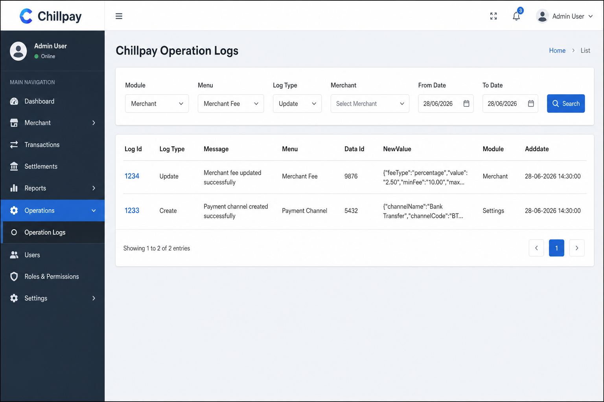
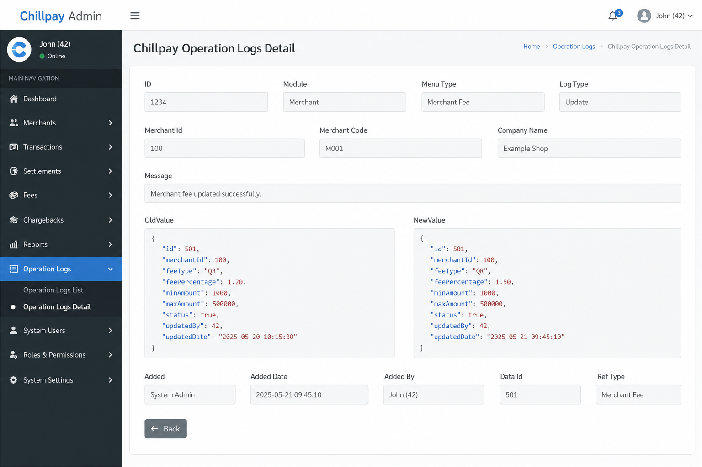
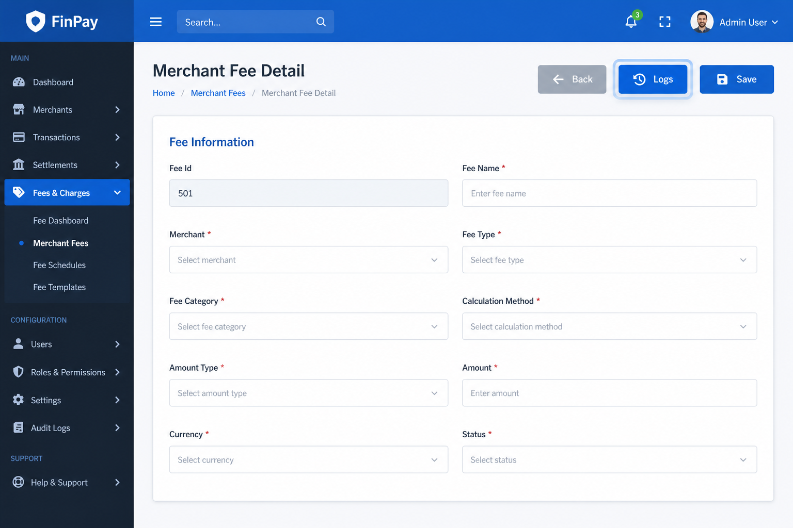

4. UI
4.1 หน้า List — Chillpay Operation Logs
Route: GET /OperationLog/ChillpayOperationLogs

คอลัมน์ตาราง: Log Id, Log Type (ชื่อ action), Message, Menu (ชื่อเมนู), Data Id, NewValue (ย่อ), Module (ชื่อ module), Adddate
พฤติกรรม Menu dropdown
| Module ที่เลือก | Menu dropdown |
|---|---|
| Select All (0) | ซ่อน |
| Merchant (2) | Merchant, Fee, Route, Service Fee, Keys, Email, User |
| Settings (3) | Payment Channel, Route, Credit Card, … |
พฤติกรรม Log Type dropdown
- ใช้
getChillpayOperationLogAllowedActions()จากchillpay-operation-log-constants.js - ค่า allowed actions ต้องตรงกับ
GetAllowedActions()ในChillpayOperationLogRegistryConstants.cs - เมนูที่ไม่มีใน map (เช่น 302, 311) ใช้ default
[1,2,3,4,5,7,8](ChillpayOperationLogDefaultMenuActions)
Ajax Search: POST /AjaxChillpayOperationLogs/Search เท่านั้น (ลบ SearchMerchant / SearchSettings แล้ว)
4.2 หน้า Detail — Chillpay Operation Logs Detail
Route: GET /OperationLog/ChillpayOperationLogsDetail/{id}

แสดง read-only: ID, Module, Menu Type, Merchant (ถ้า module 2), Log Type, Message, OldValue / NewValue (JSON เต็ม), Added System/Date/By, Data Id, Ref*
4.3 ปุ่ม Logs บนหน้า Detail / Update
Partial: _ChillpayOperationLogButtonPartial.cshtml
ปุ่ม: btn-info + ไอคอน fa-history + ข้อความ Logs

หน้าที่มีปุ่ม (ตัวอย่าง):
| หน้า | ModuleType | MenuType |
|---|---|---|
| Merchant Detail | 2 | 200 |
| Merchant Fee Detail | 2 | 202 |
| Merchant Route Detail | 2 | 203 |
| Merchant Service Fee Detail | 2 | 204 |
| Merchant Email Detail | 2 | 206 |
| Merchant User Detail | 2 | 201 |
| Generate Merchant Keys | 2 | 205 |
| Payment Channel Update | 3 | 300 |
| Payment Route View/Update | 3 | 301 |
| Credit Card Config Update | 3 | 303 |
| Bank Payment Api Detail | 3 | 308 |
| Exchange Rate Update | 3 | 310 |
| SMS Route Detail | 3 | 309 |
| ChillPay Maintenance | 3 | 306 |
Flow deep link (ใหม่ — ไม่ใช้ LogMode):
sequenceDiagram
participant User
participant Detail as Merchant Fee Detail
participant LS as localStorage
participant List as Operation Logs List
participant API as operation-logs-api
User->>Detail: กดปุ่ม Logs
Detail->>LS: ChillpayLogSearchData<br/>{moduleType:2, menuType:202, dataId:501, merchantId:100}
Detail->>List: window.open (แท็บใหม่)
List->>LS: อ่าน + ลบ (ใช้ครั้งเดียว)
List->>List: ตั้ง Module, Menu, Merchant, dataId
List->>API: POST /search
API-->>User: แสดง log ของ fee 501
หมายเหตุ: เปลี่ยน Module / Menu / กด Search บนหน้า List จะ เคลียร์ dataId จาก deep link